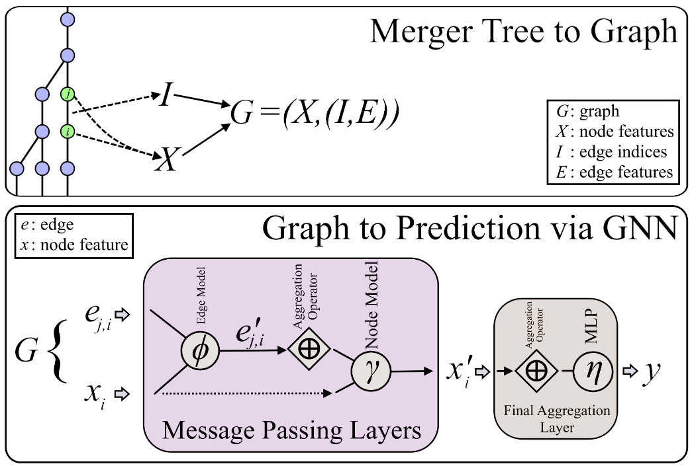

Publications
-
Linking Warm Dark Matter to Merger Tree Histories via Deep Learning Networks
-
The DREAMS Project: Disentangling the Impact of Halo-to-halo Variance and Baryonic Feedback on Milky Way Dark Matter Density Profiles
-
On the Sensitivity of Different Galaxy Properties to Warm Dark Matter
Hover to see summary.
Linking Warm Dark Matter to Merger Tree Histories via Deep Learning Networks

Placeholder description — replace with a short summary of the featured paper: the question it addresses, the approach taken, and the headline result shown in the figure above.
Current Work
-
Example: title of a paper or project
-
Example: a second project title
-
Example: a third project title